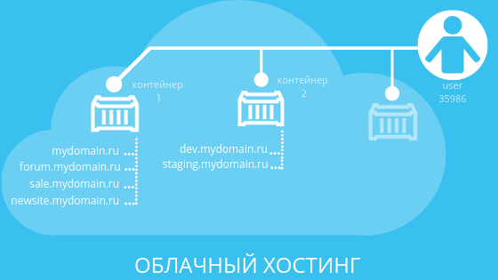

Облачный хостинг
Облачный хостинг использует облачные ресурсы для развёртывания сайтов, мобильных приложений и даже целых «офисов в облаке» (виртуальный офис). В отличие от других видов хостинга это происходит не на одном локальном сервере, а на нескольких связанных в кластер физических и виртуальных серверов к которым добавляются связанные в сеть системы хранения данных (SAN). При аренде пользователь платит только за используемые по факту ресурсы, которые могут быстро масштабироваться или отключаться в зависимости от нужд. Причём оплата почасовая, то есть можно настроить потребление ресурсов в дневное и ночное время. Настройки могут регулироваться в автоматическом режиме через приложение. Эта гибкость — основное преимущество облачного хостинга.
Облачная модель набирает популярность во многом благодаря разработкам BaaS (Backend-as-a-Service — бэкенд как услуга) и IaaS (Infrastructure-as-a-Service — инфраструктура как услуга). Не будем углубляться в её описание, так как это выходит за рамки статьи. Скажем только, что разработчиков привлекает в ней универсальность кросс-платформенного бэкенда для любого проекта, а владельцев бизнеса — надёжность резервного копирования и удобство коллективной работы над проектами. Подходит для крупных и быстрорастущих проектов, компаний с сезонными колебаниями спроса.
В облаке сайты размещаются в обособленных средах — контейнерах. В одном контейнере, например, могут располагаться рабочие версии сайтов, в другом — тестовые. Процессы и возможные неполадки в работе сайтов как внутри контейнеров, так и между контейнерами никак не отражаются на остальных сайтах. Внутри отдельного контейнера можно размещать неограниченное количество проектов.
